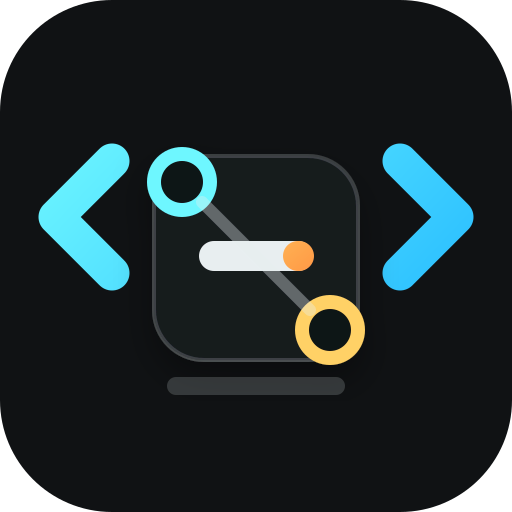
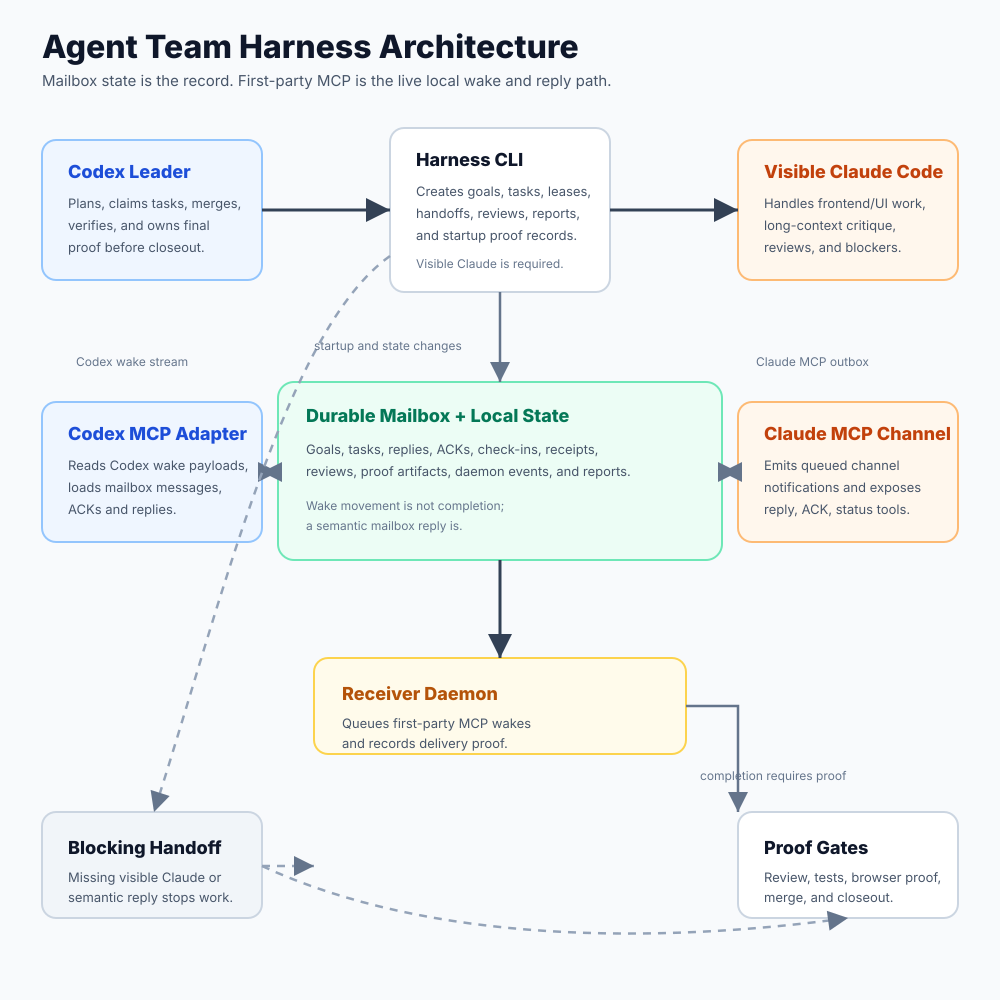

Plan
Codex and Claude both weigh in before tasks are created.

Agent Team HarnessAlpha 0.1.0-alpha
A local harness that keeps Claude visible, wakes both teammates through first-party MCP adapters, and refuses to call work done without review plus proof.
Created and maintained by Andrew Guzman.
$ agent-team start --name my-project --daemon
✓ mailbox receiver active
✓ first-party Claude MCP ready
✓ first-party Codex MCP wake ready
✓ visible Claude teammate ready
✓ Codex proof owner ready
$ agent-team review request T-000001
→ sent without blocking Codex
$ agent-team verify final
✓ reviews approved
✓ browser proof attached
✓ ready to close outClaude and Codex get local wake/read/reply adapters built into the harness.
Claude-owned work blocks when the visible teammate or semantic reply is missing.
Done means reviewed, merged, verified, and recorded.
Updated Architecture
The receiver daemon queues Claude-bound notifications into the first-party Claude MCP outbox and sends Claude-to-Codex wake payloads through the Codex MCP adapter. The legacy bridge is left as an explicit compatibility lane for startup and smoke diagnostics, not the normal work bus.

How It Works
Agent Team Harness keeps goals, tasks, leases, reviews, mailbox messages, browser proof, computer proof, and closeout records in local project state. First-party MCP adapters make the collaboration feel live without making chat history or raw channel replies the system of record.
Codex and Claude both weigh in before tasks are created.
The daemon wakes Claude through first-party MCP and Codex through the wake adapter.
Each model checks the other before merge gates open.
Browser, computer-use, and command proof attach to task state.
Built For Real Work
Claude-owned work requires a visible teammate and semantic mailbox reply, or the harness reports the blocker.
Requests require meaningful replies: what was received, what happens next, and what is blocked.
Completion can include tasks, approvals, proof artifacts, warnings, screenshots, and self-heal notes.
Install
git clone https://github.com/andrewnova/agent-team-harness.git
cd agent-team-harness
./scripts/install-codex.sh
cd /path/to/your/project
agent-team doctor --fix --target my-project
agent-team start --name my-project --project-dir "$PWD" --daemon